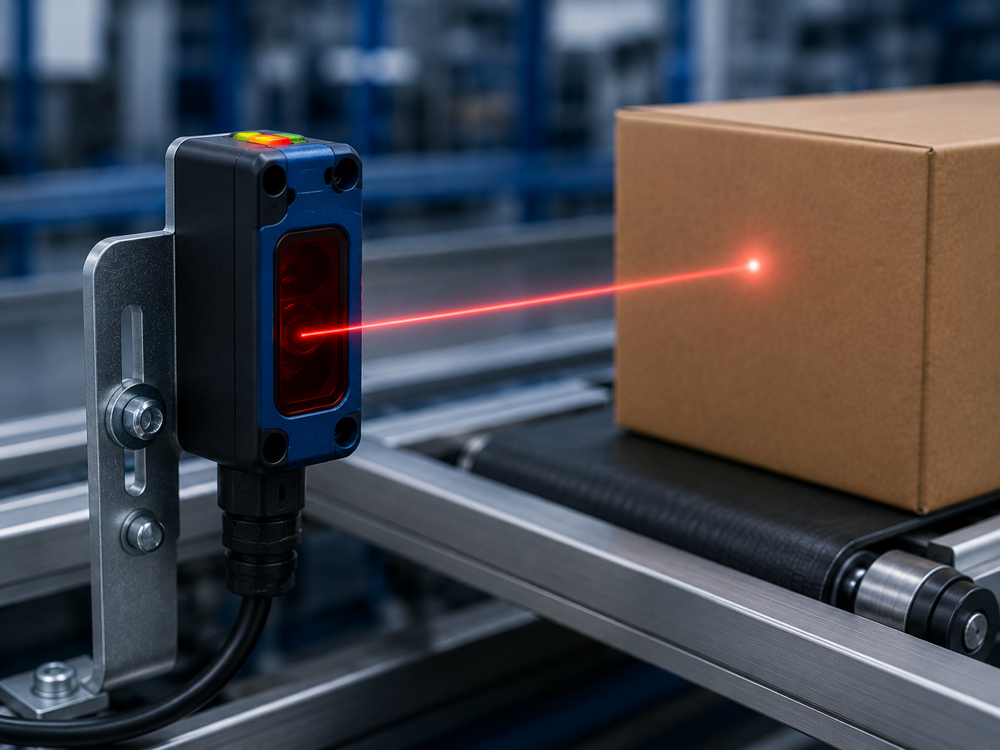
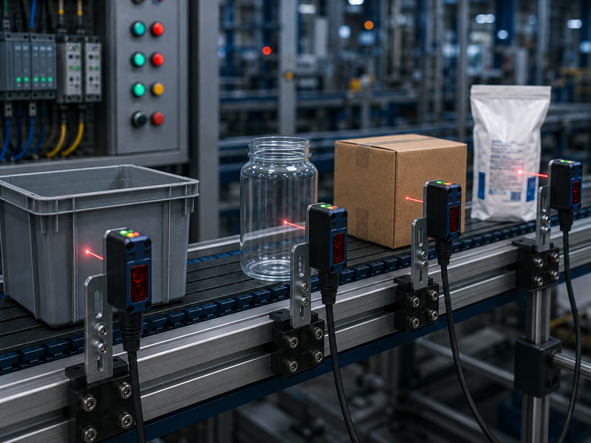
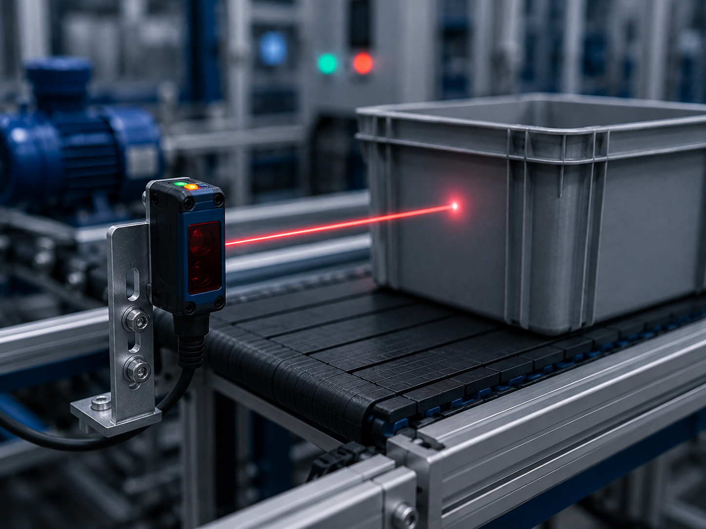

Fotoelétricos
Dispositivo que utiliza um feixe de luz para detectar a presença, ausência ou distância de objetos, sem contato físico e com alta precisão.

Conceito e Aplicação
O sensor fotoelétrico é um dispositivo de detecção que opera por meio da emissão e recepção de luz, permitindo identificar a presença, ausência ou até mesmo características de objetos sem contato físico. Seu funcionamento baseia-se em um emissor de luz — geralmente LED infravermelho, vermelho ou laser — e um receptor que capta o sinal luminoso. Existem três configurações principais: barreira, onde emissor e receptor são separados; reflexão, que utiliza um espelho refletor; e difuso, no qual o próprio objeto reflete a luz de volta ao sensor.
Versáteis e de rápida resposta, os sensores fotoelétricos estão presentes em praticamente todos os setores industriais. Confira três aplicações comuns:
- Detecção de objetos em esteiras transportadoras;
- Sistemas de segurança e portas automáticas;
- Controle de posição em máquinas e robôs.
Informações Complementares

Funcionamento
Emite um feixe de luz e detecta sua interrupção ou reflexão. Opera nos modos barreira, reflexão com espelho ou difuso, conforme a aplicação.
Saiba Mais
Aplicações
Detecção de objetos em esteiras, sistemas de segurança com barreiras de luz e controle de posição em robôs e máquinas industriais.
Saiba Mais
Vantagens
Detecção sem contato, longo alcance, resposta ultrarrápida e capacidade de identificar objetos de diferentes materiais e cores.
Saiba MaisEmpresas
As principais empresas que fabricam sensores fotoelétricos são referências no setor de automação e detecção óptica. Em 2025, diversas marcas se destacam pela inovação, variedade de configurações e alta performance em aplicações industriais.
A Sick, a Banner Engineering e a Omron são algumas das principais fabricantes de sensores fotoelétricos utilizados em linhas de produção e sistemas automatizados. Seus produtos se destacam pela precisão, durabilidade e capacidade de operar em ambientes com poeira, umidade e variações de luminosidade.
SICK: Líder global em tecnologia de sensores, oferece uma ampla linha de sensores fotoelétricos com versões laser, infravermelho e fibra óptica. Reconhecida pela precisão milimétrica e soluções robustas para ambientes industriais exigentes.
BANNER ENGINEERING: Empresa americana especializada em sensores e soluções de automação. Seus sensores fotoelétricos se destacam pela facilidade de configuração, alta imunidade a interferências e ampla gama de modelos para detecção de objetos transparentes e coloridos.
OMRON: Gigante japonesa da automação industrial, desenvolve sensores fotoelétricos compactos e de alta velocidade. Seus produtos são ideais para aplicações que exigem detecção precisa em espaços reduzidos, como máquinas de embalagem e linhas de montagem eletrônica.